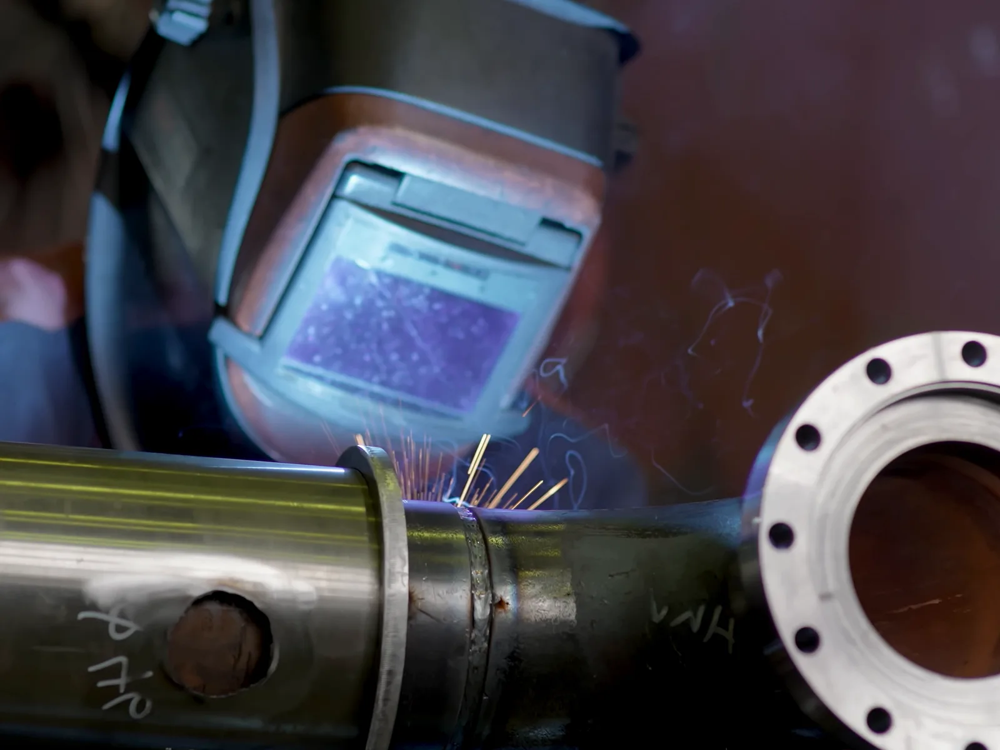
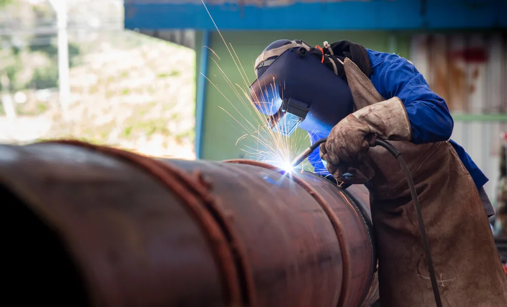
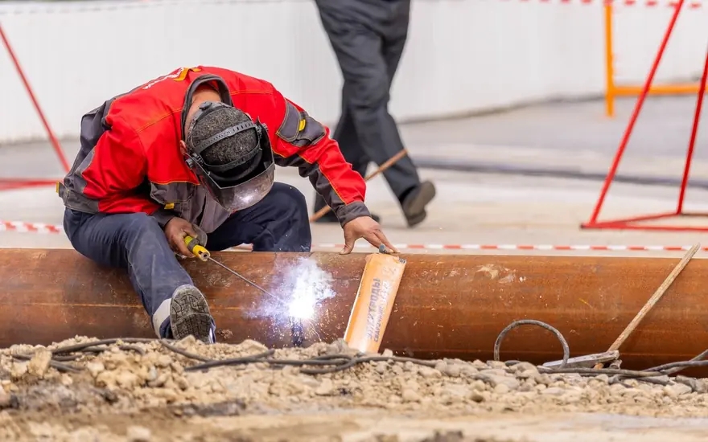

Home · Mobile Welding · Pipe Welding
New Orleans Pipe Welding Service
At Big Easy Mobile Welders, we bring pipe welding and pipeline repair to your property across New Orleans. Our licensed, insured welders arrive with a fully equipped rig, so the pipe never has to leave the site.

We come to the jobWhat Is Included in Our Pipe Welding Service in New Orleans?
Every pipe welding job in New Orleans includes a look at the pipe and a free estimate, a process matched to the pipe, a licensed and insured welder on site with a fully equipped rig, clean prep and finishing, and a walkthrough of the finished weld. You approve the price before we start.
A Free Estimate First
We look at the pipe, the joint and the access, then give you a no-obligation quote with no hidden fees.
The Right Process
Stick or gas-shielded welding, chosen for the pipe material, its wall thickness and the setting.
Welding on Site
Our fully equipped mobile unit comes to your home or business, so nothing gets hauled to a shop.
Clean Prep
We clear rust, paint and debris from the pipe ends with brushes and grinders before the first pass. Clean, beveled ends let the weld reach through the full wall of the pipe.
Licensed and Insured Welders
Your pipe goes to a licensed, insured and highly trained welder with years behind the torch.
A Walkthrough at the End
We show you the finished weld and stay a call away if you need an adjustment.

What Types of Pipe Welding Do Welders Use in New Orleans?
The four arc processes welders commonly use on pipe in New Orleans are stick welding, MIG welding, flux-cored welding and TIG welding. Each joins pipe with an electric arc, but they differ in how the weld is shielded from the air, which decides where each one works best and which pipes it suits.
Stick Welding (SMAW)
Heat from an electric arc melts a flux coated electrode. The flux releases a shielding gas and leaves a layer of slag that protects the weld from the air. Stick tolerates rust and mill scale better than MIG, which helps on older pipe out in the field.
MIG Welding (GMAW)
A continuously fed wire forms the arc and the weld pool, while a shielding gas protects both from contamination. It is quick and clean on indoor work, but a breeze can blow the gas away, so it suits open-air pipe less well.
Flux-Cored Welding (FCAW)
A tubular wire filled with flux is fed through the arc and fuses the pipe at the joint, a good fit for thicker sections. Many flux-cored wires carry all the shielding they need inside the wire, so the process holds up outdoors.
TIG Welding (GTAW)
A non-consumable tungsten electrode forms the arc inside a shield of argon or helium, for precise welds on thinner pipe. It is the slowest of the four, so welders usually save it for stainless, thin-wall and highly visible joints.
Why Does Pipe Welding Need Extra Care in the Humid New Orleans Climate?
Pipe welding needs extra care in New Orleans because humidity and salt air push unprotected steel toward rust faster than in most climates, and storms bend and break exposed metal. A local weld has to be prepped clean, matched to the pipe and protected afterward, or corrosion starts at the joint.

A pipe weld in this climate is only as good as the protection put on it afterward.
Moisture in the air settles on bare steel, and near the water it carries salt that speeds up rust. Rust that starts at a weld spreads along the pipe and weakens the joint.
That is why we clean the pipe ends before welding and talk you through coatings once the weld is done. Our guide on protecting welded metal from rust covers the options in more detail.
Why Hire a Professional Pipe Welder Instead of Doing It Yourself in New Orleans?
Hiring a professional pipe welder in New Orleans instead of doing it yourself gets you a high-quality weld that lasts. The job also finishes faster because the welder knows the process and brings the right equipment, and less material is wasted, since a professional knows which materials suit the pipe and how to use them well.

High Quality
A professional knows which welding process fits your pipe. A quality weld holds the two pieces together and stays reliable for longer.
Time Saving
We know the process and arrive fully equipped, so the work moves faster. We can also tell you how long the job will take before we start.
Materials Conservation
We use the right materials and get the most out of each one, which saves you money. Let us recommend what suits your project.
How Does Our Pipe Welding Service Work in New Orleans?
Our New Orleans pipe welding service works in four steps. You request a free quote, we schedule a time that suits you, our welders bring the rig and weld the pipe on site, and then we walk you through the finished work, offer easy payment options and stay available for follow-up.
Request a Free Quote
Call us or use our online estimate form, and tell us about the pipe, the joint and where it is.
Schedule Your Service
Once you approve the quote, we book a time that is convenient for you.
We Weld on Site
Our welders arrive with all the tools and equipment, prep the pipe and make the weld.
Review and Follow-Up
We walk you through the finished weld, offer easy payment options and stay a call away.
 The rig comes to you
The rig comes to you
How Much Does Pipe Welding Cost in New Orleans?
Pipe welding cost in New Orleans depends on the pipe size and material, the number of joints, how easy the pipe is to reach and whether it is a repair or new work. We look at the job and give you a free, no-obligation estimate with transparent pricing and no hidden fees.
Pipe Size and Material
Larger pipe and some metals take more passes, more filler and more time to weld.
Number of Joints
A single cracked joint is a smaller job than a run of new connections.
Access to the Pipe
Pipe that is easy to reach goes faster than pipe in a tight crawl space or overhead.
Repair or New Work
Fixing an existing joint and fabricating new sections are priced differently.
What Should You Know Before Booking a Pipe Welder in New Orleans?
Before booking a pipe welder in New Orleans, know what the pipe carries and what it is made of, how easy it is to reach, and whether the job is a repair or new work. Having those answers ready helps us give an accurate estimate and arrive with the right equipment.
What the Pipe Is and Carries
Tell us the pipe material if you know it, and whether it carries water, gas or nothing at all. Lines carrying anything must be shut off and cleared before we weld.
How We Reach It
Note gates, pets, parking for the rig and any tight spots around the pipe. Our guide on what to do before the mobile welder arrives has a full checklist.
Photos of the Joint or Run
A photo of the damaged joint, or a sketch of the new run, helps us plan the job and price it accurately.
What Do Customers Say About the Team Behind Our Pipe Welding in New Orleans?
Our customers mention quick turnarounds, top-notch workmanship, professional service and fair prices. Each review comes from a customer who hired our mobile welders, and the same licensed, insured New Orleans team handles pipe welding and pipeline repair on site at homes and businesses.
Big Easy Mobile Welders provide quality welding work at a reasonable price. They have been reliable and quick to respond whenever I've needed them, which has made it easy for me as their customer!
The guys from Big Easy Mobile Welders were great! They came to my house and welded two iron railings with a quick turnaround time, which was just what I needed. The quality of workmanship is top notch which made me a satisfied customer! If you need anything welded then these guys will be able to help out big time.
I can't recommend Big Easy Mobile Welders enough! They helped me out of a jam by welding our gate, and their work is amazing. The fast service combined with great quality made all the difference in getting things done quickly without any hassle for me. Thanks again, guys!
If you need a welder for any type of job, I highly recommend Big Easy Mobile Welders. The team did an amazing job on my home and business! They were professional from start to finish. Thankful that their work could help me get back up and running again sooner than expected.
I had the pleasure of working with Big Easy Mobile Welders this past week. They are not only professional and skilled, but also very affordable! I highly recommend them for any welding job you may need done on your property or vehicle. You won't regret using these guys as they do amazing work at a fair price 10/10 would do again!
What Other Welding Services Pair With Pipe Welding in New Orleans?
Pipe welding in New Orleans often comes alongside our other mobile welding work: fence and gate welding, iron railing repairs, window frame welding, specialized jobs at your home or office, and custom welding. Every service is done on site by the same licensed, insured team.

Fence Welding
Fence repairs and custom fence fabrication, with the material and process chosen for your fence.
View fence welding →
Gate Welding
Gate repairs and custom gates in steel or aluminum, with materials and tools covered in your estimate.
View gate welding →
Iron Railing Welding
Custom indoor and outdoor railings for stairways, decks and balconies, built to fit your property.
View railing welding →
Window Welding
Repairs for rusted and worn metal window frames, carried out at your home.
View window welding →
Specialized Mobile Welding
Repair work at your home or office and custom metal pieces, whatever the size of the project.
View specialized welding →
Custom Welding
Custom ironwork, estimated before we start so we arrive with the right equipment for the job.
View custom welding →
Where Can You Get a Free Pipe Welding Estimate in New Orleans?
You can get a free pipe welding estimate in New Orleans through our online estimate form or by calling (504) 370-2757. Tell us what the pipe is, where it is and what needs welding, and we will get back to you with a no-obligation quote with transparent pricing and no hidden fees.
Loading the estimate form...
If it does not appear, call us at (504) 370-2757.

What Do People Ask About Pipe Welding in New Orleans?
We answer the pipe welding questions people in New Orleans ask most: what pipe welding is, which processes and rods are used, how pipe is beveled and prepared, how safe it is, what drives the cost and how to protect a weld once it is finished.
What is pipe welding?
Pipe welding joins sections of pipe, or a pipe to a fitting or flange, with a weld that runs all the way around the joint. Because the pipe is round and often fixed in place, the welder works around it in several positions, so skill and steady technique matter more than on flat plate.
What type of welding is pipe welding?
Pipe welding is not a single process. Welders use stick welding, TIG welding, MIG welding or flux-cored welding depending on the pipe material, wall thickness and setting. Stick is common outdoors because wind does not blow away its shielding, while TIG suits thin-wall and stainless pipe.
What type of welding rod is used to weld pipe?
For carbon steel pipe, many welders run the root pass with an E6010 rod for deep penetration, then fill and cap the joint with E7018 for strength. The right choice depends on the pipe material, its wall thickness and the code the job must meet, so we confirm it during the estimate.
How do you bevel pipe for welding?
The pipe ends are ground or cut at an angle so that, when the two ends meet, they form a V-shaped groove. That groove lets the weld reach through the full wall thickness. A small flat land is left at the edge, and the ends are cleaned of rust, paint and oil before fit-up.
What are the important parts of pipe welding?
The important parts are preparation, fit-up and the passes. The ends are cleaned and beveled, lined up with an even gap, and tacked in place. Then the root pass fuses the inside of the joint, fill passes build it up, and a cap pass finishes the outside before the weld is inspected.
Is pipe welding dangerous?
Pipe welding carries real hazards: arc light, heat, fumes, sparks and the risk of fire near anything flammable. Trained welders manage them with helmets, gloves, ventilation and a clear work area. On commercial sites, hot work may also need a permit and a fire watch before it can begin.
How is pipe welding cost calculated?
Pipe welding cost is built from the labor time for each joint, the filler metal and consumables used, and the work needed to reach and prep the pipe. Pipe size, material, access and whether it is a repair or new work move those numbers, so we price every job after seeing it and you approve the cost before work begins.
After welding steel water pipe, how do you protect the welded area?
Once the weld cools, the area is cleaned of slag and spatter and then coated, usually with a primer and paint suited to the pipe. On galvanized pipe, the zinc burned off near the weld is restored with a zinc-rich coating. In humid New Orleans air, an unprotected weld will start to rust.


Book Your Free Mobile Welding Estimate
Tell us what needs welding, and we will bring the rig to your door anywhere in the New Orleans area.